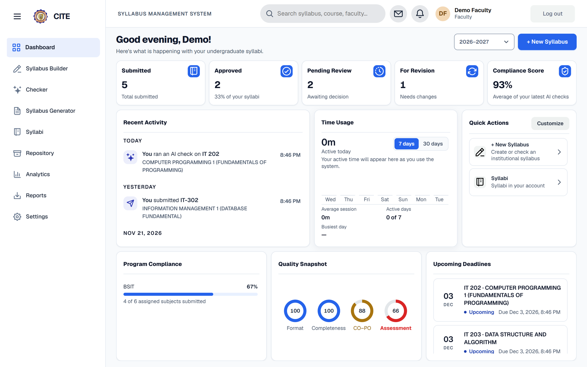
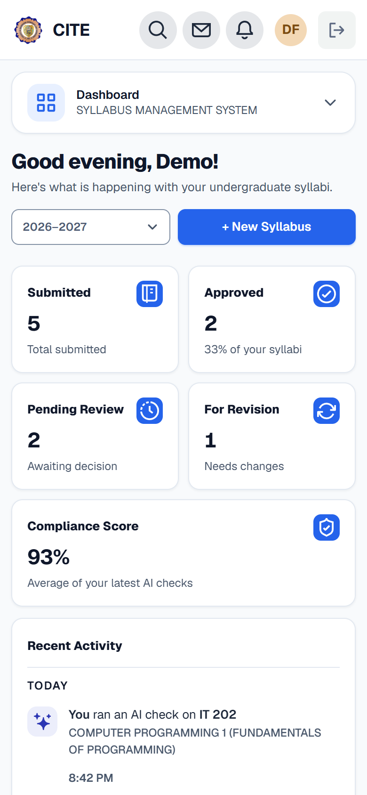

The AI-Powered Web-Based Syllabus Management System is one platform for preparing, checking, reviewing, approving, and storing course syllabi. It was developed for the College of Information Technology and Engineering (CITE) of La Consolacion University Philippines.
It answers a common problem: syllabi kept in separate files, checked by eye, and reviewed through scattered messages, with no single record of the review.
Screenshots are from the working system and show demonstration data.
for Efficient Curriculum Monitoring and Faculty Access in the College Department


Prepare. Check. Review. Approve.